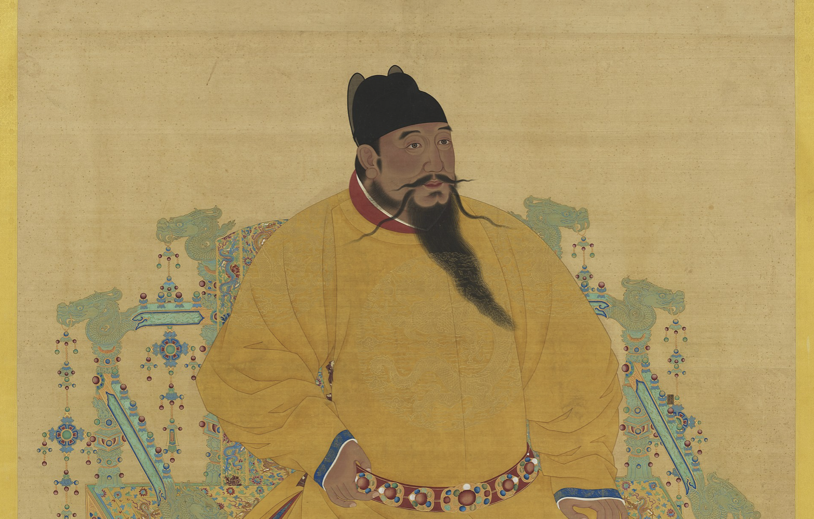

Imperial portrait of the Yongle Emperor, third ruler of the Ming dynasty (source: Wikipedia)
After seizing the throne in 1402 through civil war, Yongle Emperor – the third ruler of the Ming dynasty – sought to legitimize his rule by reshaping both the domestic and international image of the empire. He ordered the reconstruction of Beijing as the imperial capital (beginning in 1406), oversaw the construction of the Forbidden City (1406–1420), sponsored Confucian scholarship to reinforce moral authority, and pursued overseas trade to increase state wealth. Above all, he aimed to project Ming power abroad through diplomacy and maritime expansion.
Zheng He’s missions were therefore an instruments of Yongle’s broader strategy to assert legitimacy, display imperial prestige, and extend Chinese influence across the seas.
 Zheng He wax statue in the Quanzhou Maritime Museum (source: Wikipedia)
Zheng He wax statue in the Quanzhou Maritime Museum (source: Wikipedia)
Zheng He was born Ma He in 1371 in Yunnan to a Muslim family. His father had completed the pilgrimage to Mecca, indicating the family’s connection to the wider Islamic world. During the Ming conquest of Yunnan, Ma He was captured as a child by Ming dynasty forces, castrated, and assigned to court service. Through his intelligence and loyalty, he rose within the imperial household and eventually gained the trust of the Yongle Emperor, who later appointed him to lead the great maritime expeditions.
With a background that combined multicultural upbringing, court education, and military command experience, Zheng He proved himself well suited for diplomatic missions; his personal history made him an ideal representative of the Ming court in dealing with foreign rulers and diverse societies.
His career demonstrates how imperial service could enable remarkable social mobility and, in turn, shape global history: Zheng He, once a captive, rose to command the largest naval fleet in the world.
Between 1405 and 1433, the Ming Dynasty launched the largest state-sponsored maritime expeditions the world had yet seen. Zheng He was assigned as the admiral due to his services and loyalty to the Yongle Emperor. He commanded fleets of more than 300 ships and 27,000 men, Zheng He sailed across the South China Sea, Indian Ocean, and Arabian Sea, reaching as far as East Africa.
These voyages were not designed for territorial conquest or permanent settlement. Instead, they served as instruments of imperial policy that promoted diplomacy, trade, and cultural exchange across the seas.
Taken together, these goals reveal that Zheng He’s voyages represented a model of overseas engagement based on influence and exchange rather than empire-building, distinguishing them from later European maritime expansion.
In global perspective, Yongle’s policies show that early modern world power was not exclusively European. China possessed both the technology and administrative capacity to dominate international trade decades before Columbus sailed in 1492.
® 2026 Phuong-Anh Nguyen. Created for HIS 111 Midterm Project. All rights reserved.